Project 2!
The second project
3D Remixing, TinkerCAD and Fusion: The Tale of the Studious Worm
This project was about CAD and using different programs to design the same thing. My first sketch (seen below) was of a worm crawling out of an apple. On the back, it says "Studious Worm", which was then switched to "Studious Worm eats his vegetables". I wanted to create this project to encourage everyone to eat their vegetables. I also thought that having the blend between a solid piece like the apple and one of the squiggly worms would be interesting to see how the print comes out and also gives me the oppurtunity to work with both types of prints.
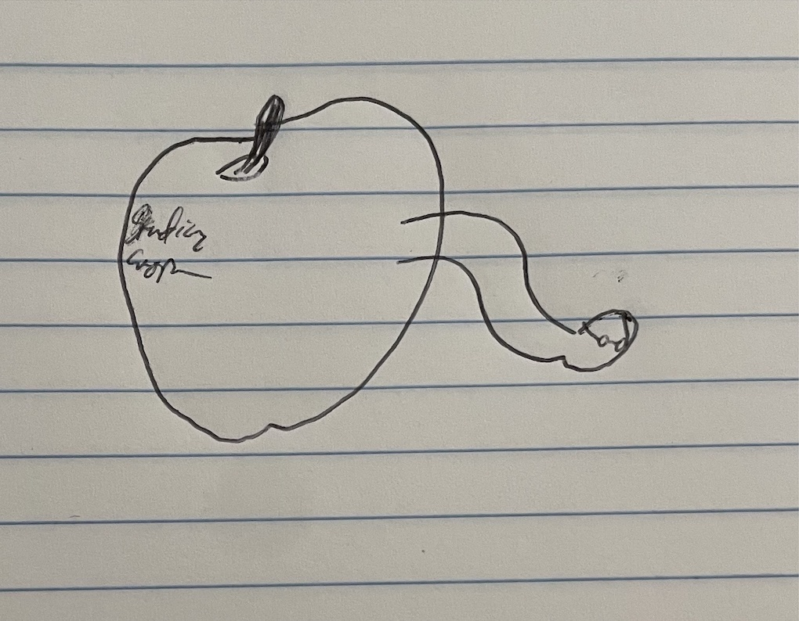Wormie Sketch
TinkerCAD
We started working with TinkerCAD, which was a very intuitive program for me. I think I used it in middle school a long time ago but not since then, I think though that it is designed to be very user friendly. I used Thingiverse to get both a print of an apple and a print of a squiggly worm and remized them. I also wanted to try out experimenting with adding text in TinkerCAD, this proved to be complicated but worth it! I imagined justified text wrapped around the back of the apple, and after watching some videos online I was able to get it on there and It looked great! I did default print settings with supports on the justified letters in the back, but I think that maybe it was a bad idea because some of the letters got messed up in the end.
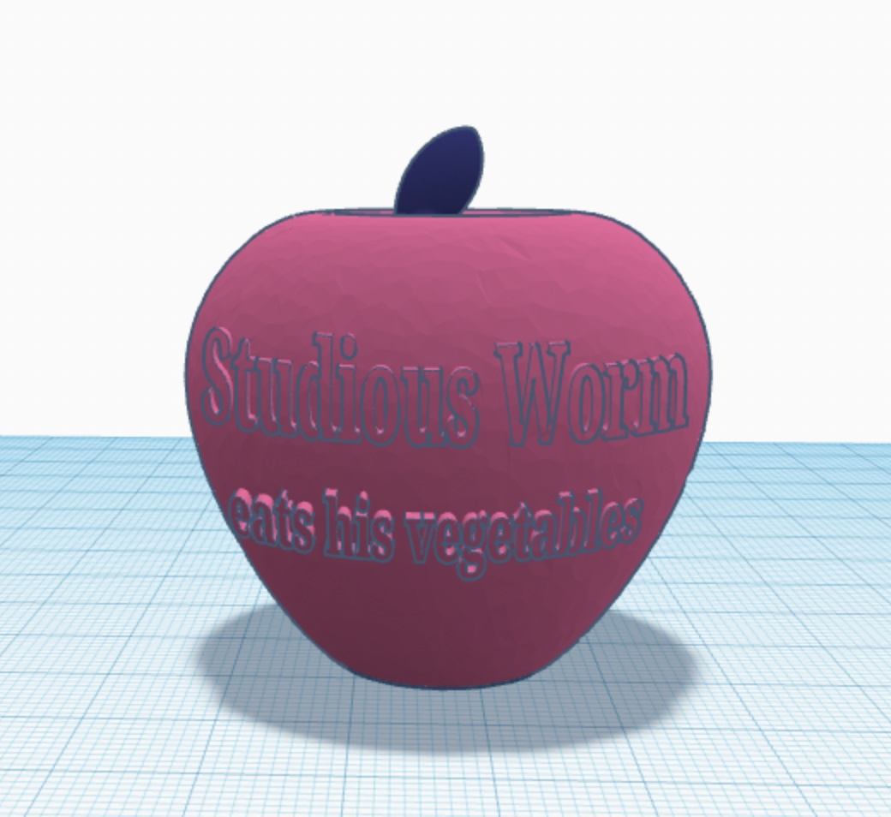 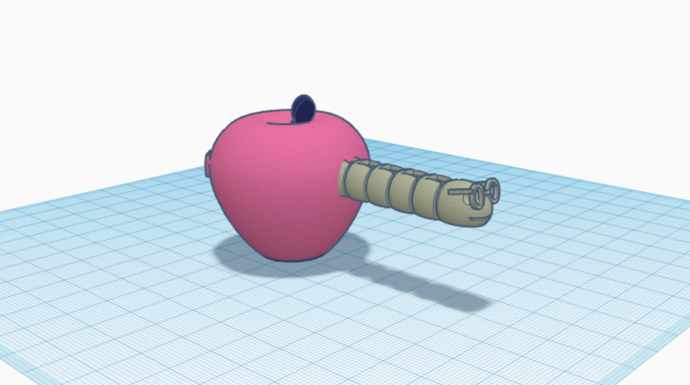TinkerCAD Mockup
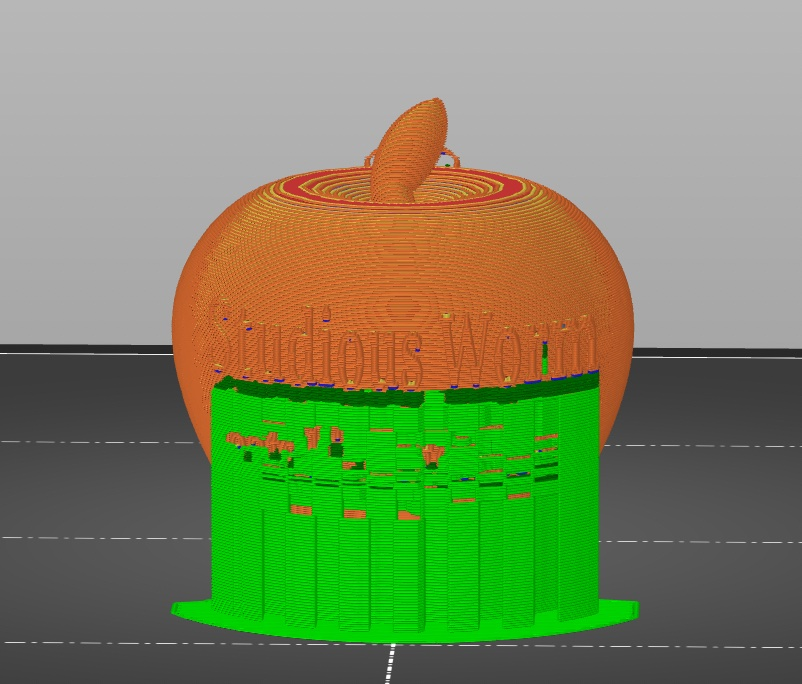 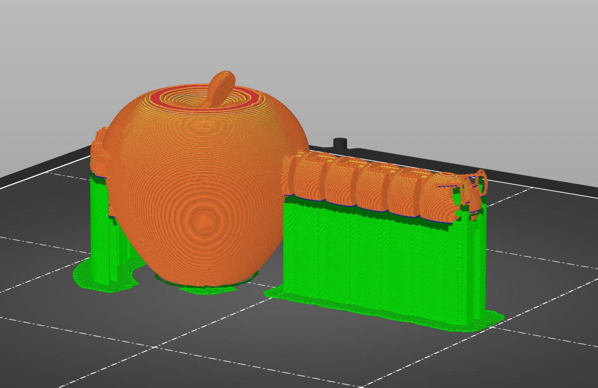
PrusaSlicer Slice
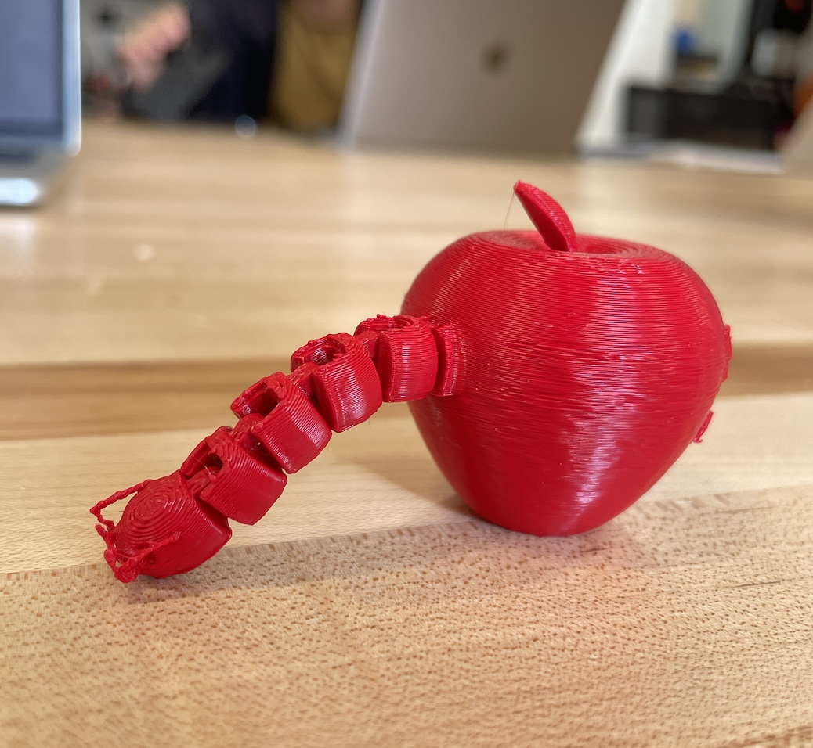 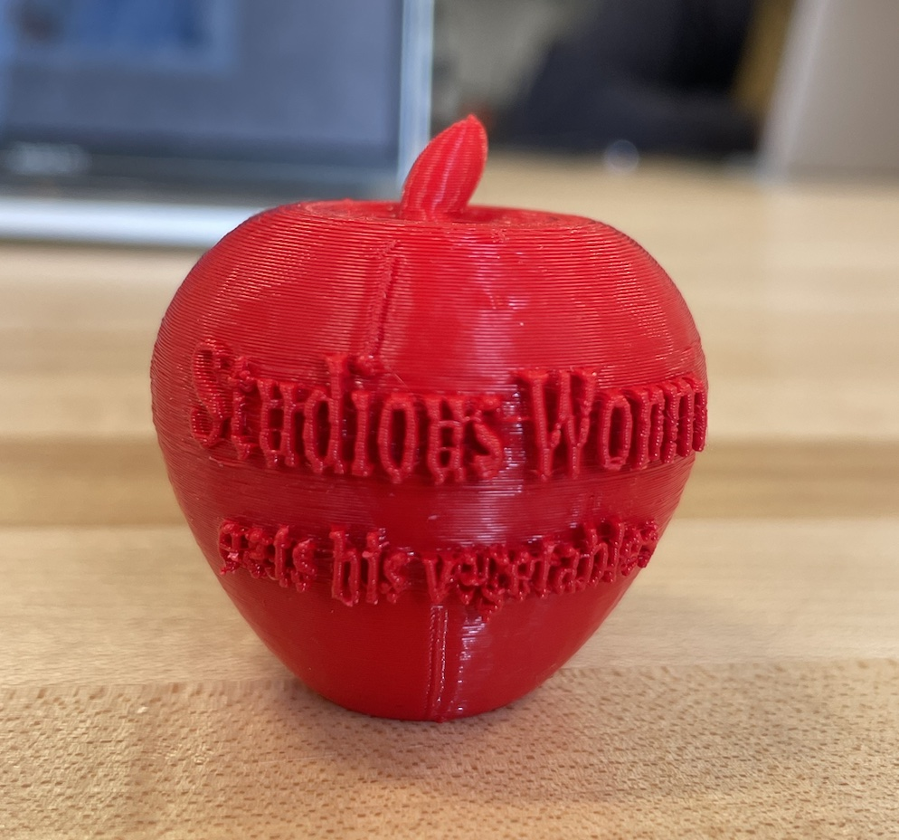
Finished Product!
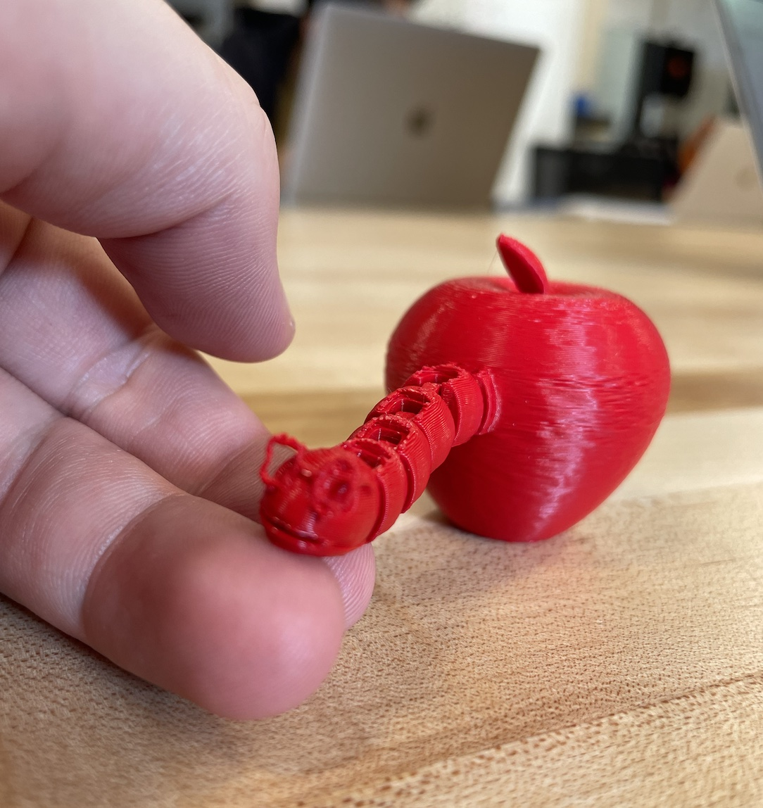
Me nursing little Studious Worm back to health
Fusion360
Fusion360 was much less intuitive to work with, but felt much more professional and with a broad range of abilities! I decided to challenge myself by designing the apple part but remixing in the worm. The actual apple took a few tries, but the stem was by far the hardest part. I drew it out, extruded, then had to Fillet very specifically to make sure that it looked good. I really like how specific the abilities with Fusion go. After I saw the justified text messed up on the TinkerCAD Print, I wanted to try indentation instead so I had to learn to do that from another video, but not too hard! I think this was a great challenge and got me familiar with both TinkerCAD and Fusion in a great way!
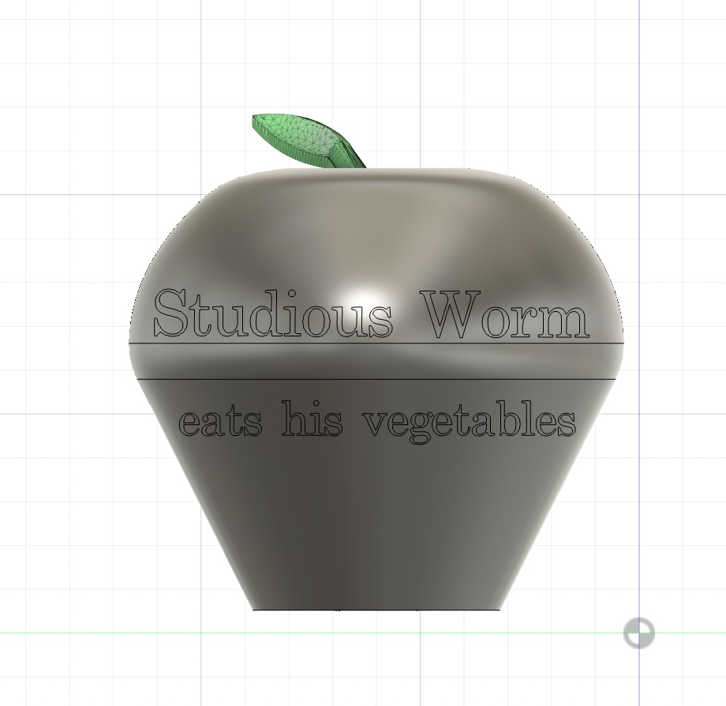 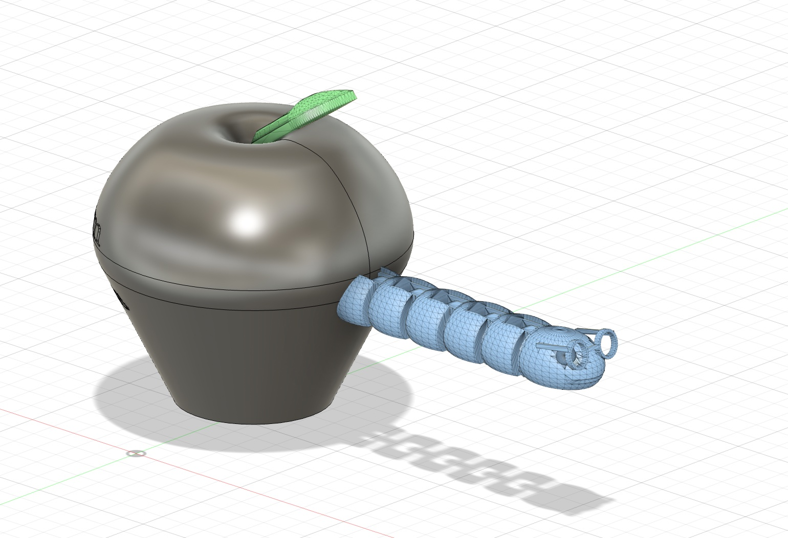Fusion Mockup
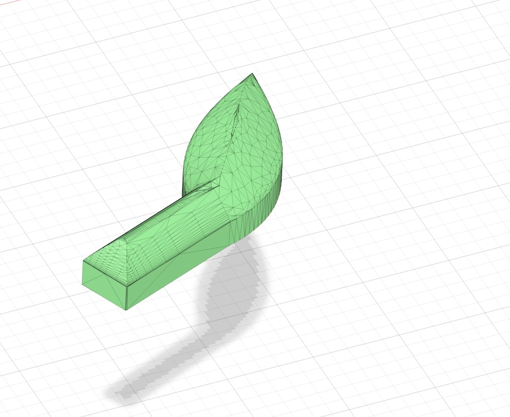
Stem!


PrusaSlicer Slice
No finished product (yet :D)